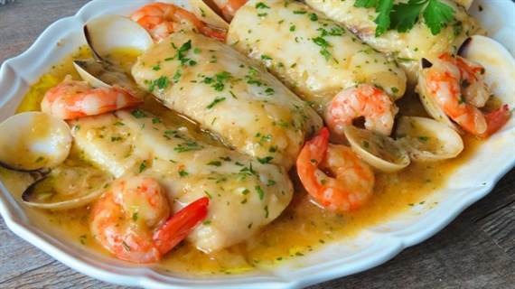

Merluza en salsa marinera

| Ingredientes: |
- 4 lomos de merluza
- 250g de almejas
- 16 langostinos
- 150 ml de vino blanco
- 1 cebolla
- 2 dientes de ajo y una ramita de perejil
- 1 cucharada de harina
- Sal y aceite de oliva
|
Método de preparación:
- Racion/es: 4
- Tiempo de preparación: 40min
- Lipiar bien los langostinos. Quitar la cabeza y toda la cáscara, déjar la cola y, con ayuda de un cuchillo, hazcer un pequeño corte y tirar del intestino. Repetir esto con todos los langostinos.
- Cortar la cebolla fina y picar bien el ajo y el perejil. Poner un poco de aceite de oliva en un cazo y añadir todas las cáscaras de las gambas para saltearlas. En cuanto cambien de color, añadir un vaso de agua y dejar que hierva durante, aproximadamente, 5 minutos.
- Poner una sartén al fuego y vertir un chorro de aceite virgen extra. Añadir la cebolla y añadir después el ajo y perejil cuando la cebolla esté transparente. Dar unas vueltas y al minuto añadir una cucharada de harina. Dar unas vueltas para que se tueste la harina e incorporar el vino blanco. Añadir también el caldo preparado con las cabezas de las gambas con un colador.
- Cocinar la merluza. Cuando haya reducido el alcohol del vino blanco, incorporar el pescado. Sazonar con sal al gusto y dejar que hierva tapado.
- Incorporar los langostinos y las almejas. Tras 4 o 5 minutos, el pescado estará casi listo. Añade las colas de los langostinos y las almejas. Tapar la sartén y dejar que se cocine durante aproximadamente 3 minutos.Rectifica de sal.